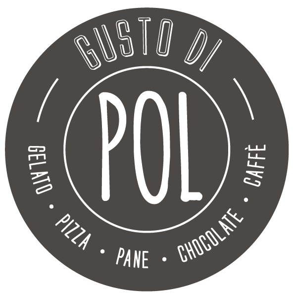
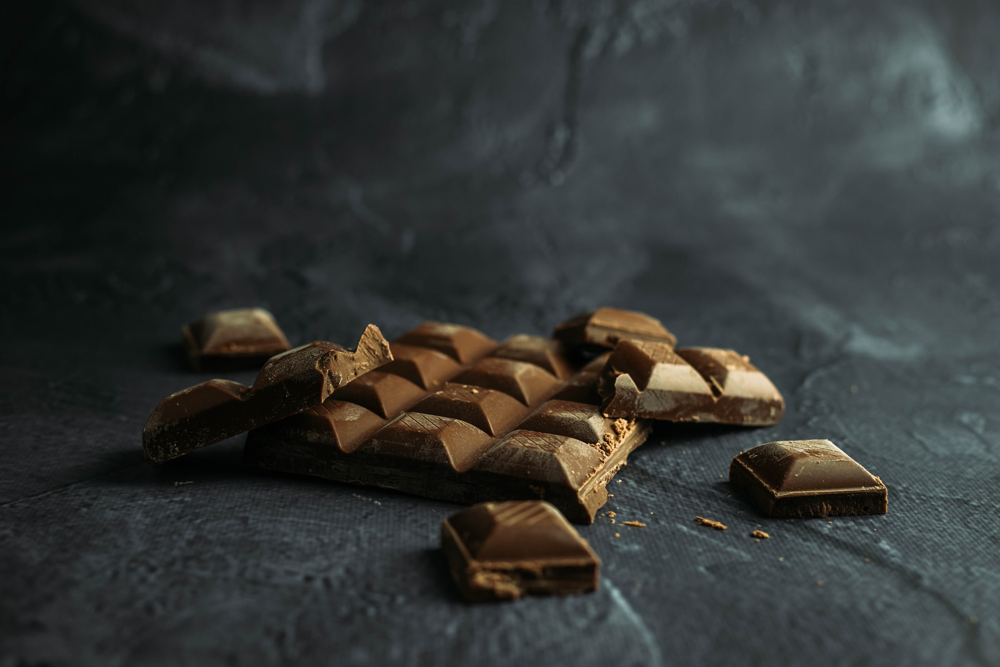
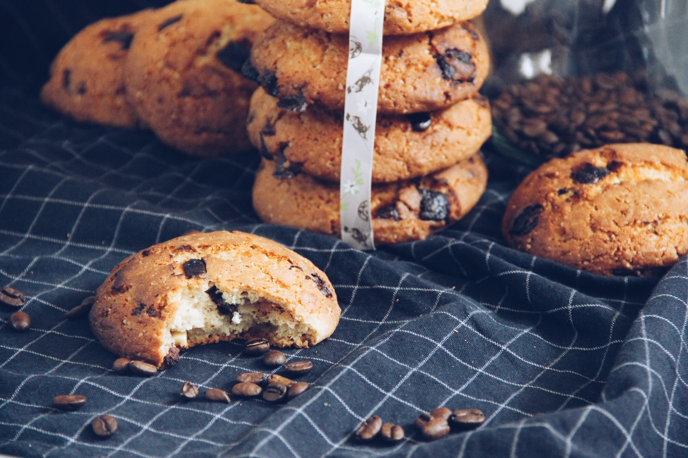

Restaurant
De hele dag geopend. In de ochtend een ontbijtje of gewoon een lekker bakkie koffie of thee met een taartje, in de middag lunch en in de avond een uitgebreide antipasti kaart met natuurlijk pizza's of een maaltijdsalade.

Gusto di Pol ReserveerBuon appetito!
Een ontbijtje of een bakkie met een taartje, lunch, antipasti en pizza uit de traditionele pizza-oven. Iedere dag open vanaf 8.30 uur aan de Haagsemarkt.
Bij Gusto di Pol kun je de hele dag terecht voor al het lekkers wat Italië te bieden heeft.

Ciao, benvenuto
Geïnspireerd op onze vele reizen naar Italië en de liefde en passie voor het Italiaanse eten. Wij, Talita en Paul, willen deze passie graag met jullie delen in onze Italiaanse bakkerij, pizzeria, ijssalon en koffieshop.
Wees welkom en schuif met vrienden of familie aan voor een Italiaanse koffie met dolce, een heerlijk ontbijt, lunch, antipasti, pizza uit onze traditionele pizza-oven of verrukkelijke desserts.
Krijg je maar geen genoeg? Wij bakken verse Italiaanse broden en patisserie om thuis lekker van te smullen.
De hele dag geopend. In de ochtend een ontbijtje of gewoon een lekker bakkie koffie of thee met een taartje, in de middag lunch en in de avond een uitgebreide antipasti kaart met natuurlijk pizza's of een maaltijdsalade.

Dagelijks worden hier Italiaanse broden, croissant, bombolini's en taartjes gebakken. Voor het restaurant, maar ook om lekker mee naar huis te nemen.

Kom kijken in ons chocolade atelier. Hier tref je regelmatig onze chocolatiers aan het werk, die de meest verrukkelijke creaties maken voor onze winkel.

Gusto di Pol is begonnen als ijssalon en nog steeds maken wij dagelijks meer dan 20 soorten ijs volgens authentiek Italiaans recept. Het hele jaar door, plus ijsbonbons, ijsgebak en ijstaarten.

Allerlei Italiaanse producten, onze eigen gemaakte chocolade en natuurlijk brood, croissantjes en taartjes om mee naar huis te nemen.

High Tea!
Een heerlijke combinatie van vers bereide zoete en hartige gerechtjes.
€ 29,50 p.p. vanaf 2 personen
Reserveer je High Tea
High Wine
5 kleine gerechten met 5 bijpassende wijnen (kleinere hoeveelheid per glas).
€ 49,50 p.p. vanaf 2 personen
Reserveer je High WineBuon Natale & Felice anno nuovo
Iedere dag geopend vanaf 8.30 uur.
De keuken is open tot 21.00 uur.
Gusto di Pol
Haagsemarkt 29
4813 BB Breda (Princenhage)
Tag ons!
Tag ons op Instagram met een foto van je bezoek aan Gusto di Pol. Elke maand krijgt de mooiste of leukste foto een verrassing. Je vindt ons ook op Facebook en TikTok.